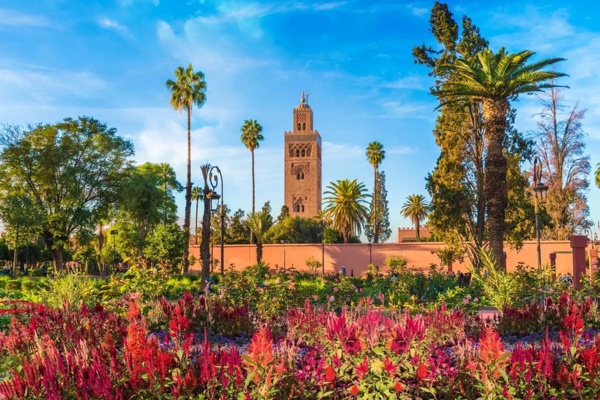
Destination Guide
Marrakech
Rose-red palaces, a night market that never sits still, and a walled garden behind every riad door.
Best Time to Go
Mar–May, Sep–Nov
Fly Into
Menara (RAK)
Currency
Moroccan dirham (MAD)
Suggested Stay
3–4 days
Why go
Marrakech is where imperial history and everyday life share the same lanes: a 12th-century minaret, Saadian palaces and tiled courtyards sit inside the rose-coloured walls of a UNESCO-listed medina, while the souks, rooftop sunsets and a night market in Jemaa el-Fnaa fill the hours in between. The Agafay desert and the Atlas foothills are an easy half-day away.
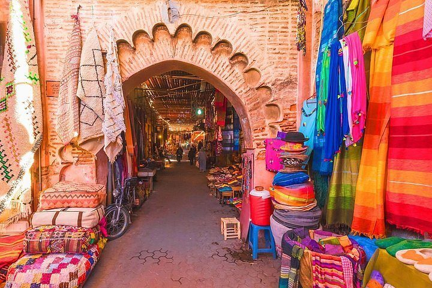
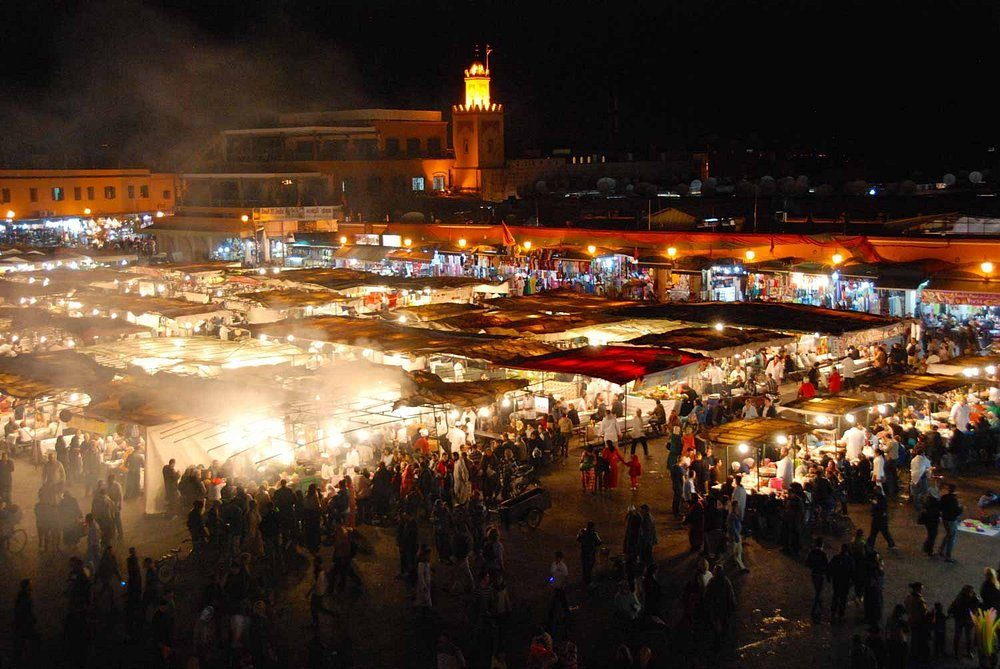
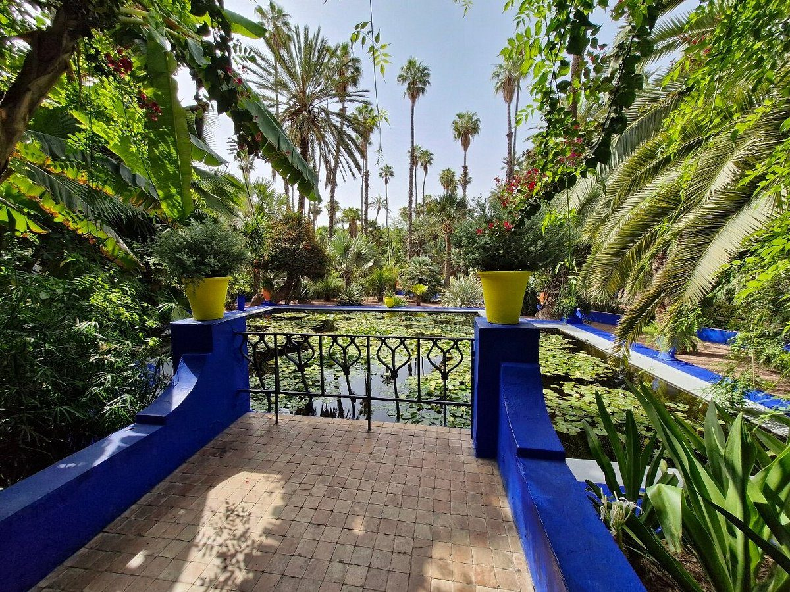
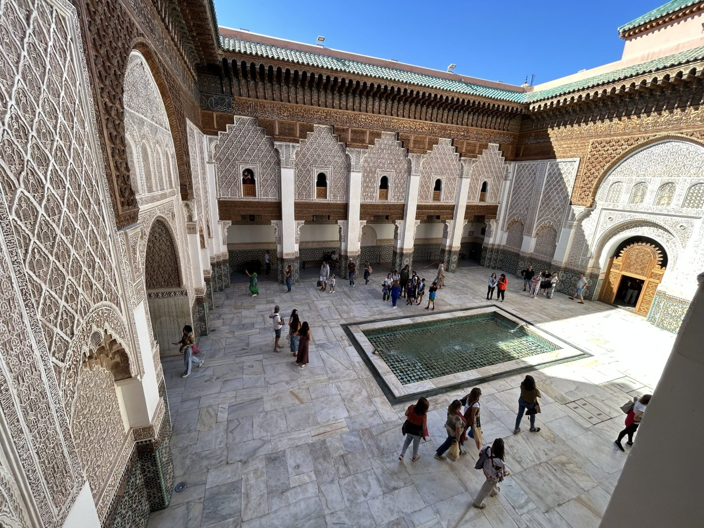
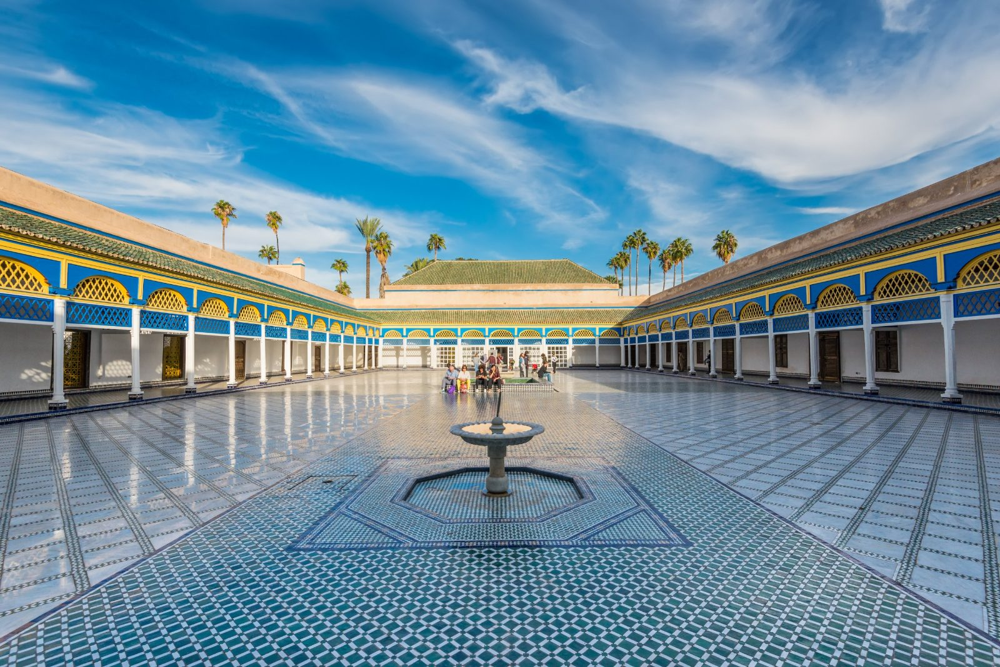
Where to Stay — Medina & Gueliz
Most first-timers base themselves in the medina, where riad hotels sit minutes from the palaces, souks and Jemaa el-Fnaa. Gueliz, the newer French-era district, is calmer, with wider streets, restaurants and the railway station — handy for onward travel.
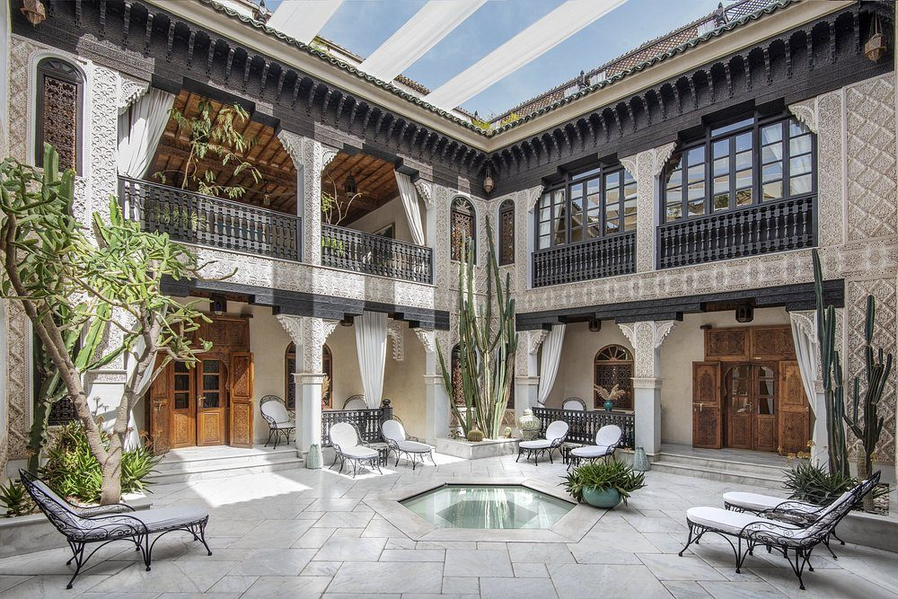
La Sultana, Kasbah
A five-star hotel made from several joined riads beside the Saadian Tombs, with rooftop terraces, a spa and a pool — about ten minutes' walk from Jemaa el-Fnaa and Bahia Palace.
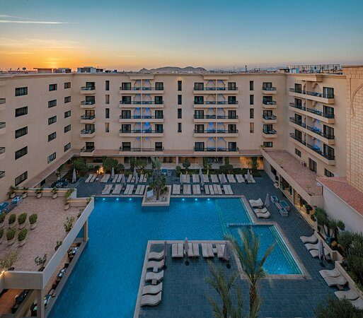
Grand Plaza, Gueliz
A modern four-star facing the railway station, with an outdoor pool and a calmer, more practical base in Gueliz — roughly a ten-minute drive from Menara Airport.
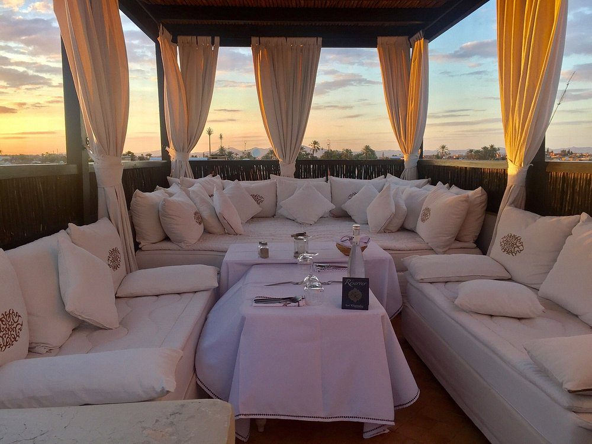
Riad Kheirredine, Medina
A luxury riad near Ben Youssef Madrasa, with a rooftop terrace, spa, outdoor pool and Moroccan dining at Moka Fine Dining. Children aged 11 and under are not allowed.
Where to Go
Marrakech's main sights cluster in and around the medina, and much of the pleasure is in wandering between them. Book Jardin Majorelle for an early slot, visit the palaces in the morning before the heat, and save the souks for late afternoon.
Bahia Palace
A 19th-century palace of painted cedar ceilings, zellige tilework and shaded courtyards, built for a grand vizier's household. Go early, when the marble court is quiet.
Jardin Majorelle
Jacques Majorelle's cobalt-blue garden, later rescued by Yves Saint Laurent and Pierre Bergé, with cacti, bamboo and lily ponds. Timed tickets sell out, so book ahead and arrive at opening.
Ben Youssef Madrasa
A former Islamic college with a courtyard pool and carved cedar, stucco and zellige on every wall — one of the most ornate interiors in the medina.
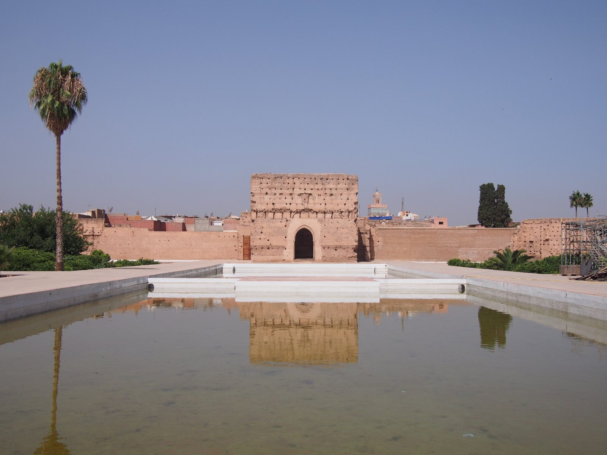
El Badi Palace
The ruins of a 16th-century Saadian palace, with sunken gardens, a long reflecting pool and storks nesting on the old walls. Come in the late afternoon for the light.
Koutoubia Mosque
The 12th-century minaret that defines the Marrakech skyline, standing in a garden of palms and rose beds. Non-Muslims can't enter the mosque, but the gardens are free to walk.
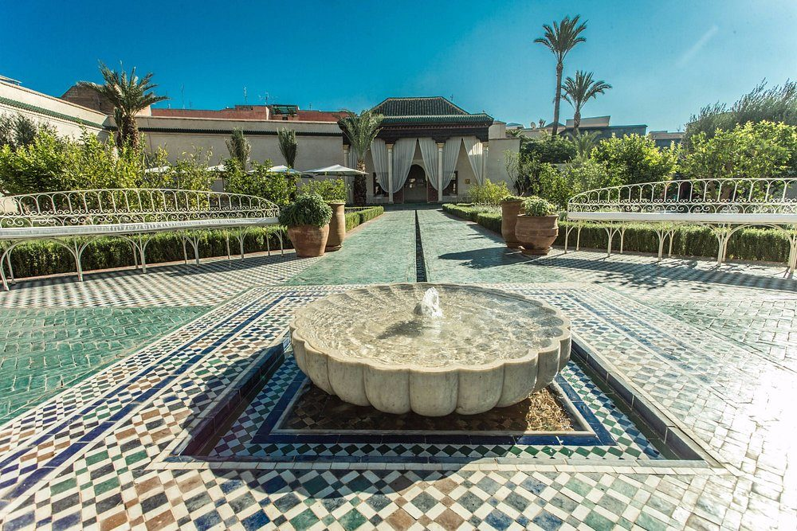
Le Jardin Secret
A restored 19th-century palace garden in the heart of the medina, with a tiled fountain court, an exotic garden and a tower for rooftop views. A calm break from the souks.
For people-watching, Jemaa el-Fnaa is hard to beat — storytellers, musicians and juice stalls by day, then rows of food stalls and smoke-lit crowds after dark.
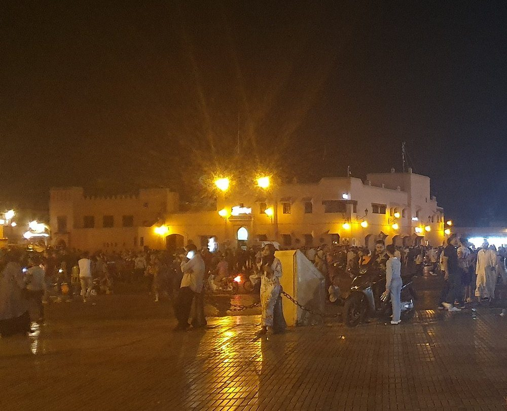
Where to Eat & Drink — Rooftops & Night Market
Dinner here starts late and runs long. Book a rooftop table for sunset, try a lamb or chicken tagine, couscous and pastilla, and finish with mint tea.
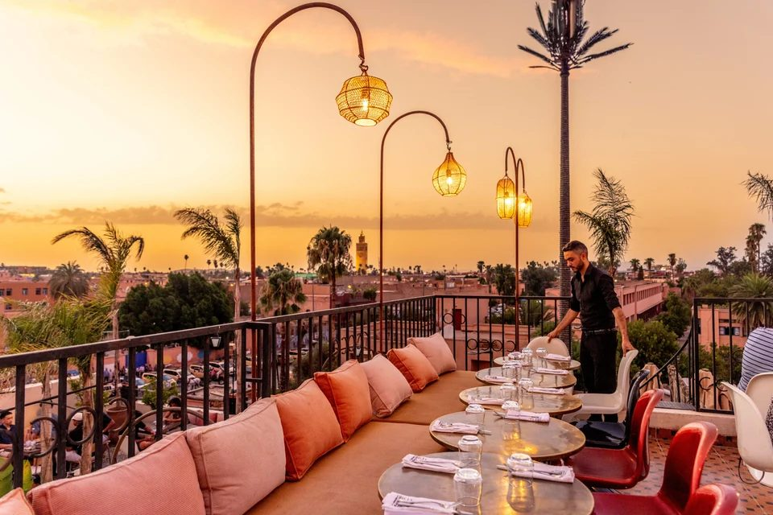
Coco Rooftop
A medina rooftop serving contemporary Moroccan cooking, with views across the skyline to the Koutoubia. Live Gnawa music and dance often follow dinner. Book ahead and arrive before sunset.
Le Grand Bazar
A stylish brasserie right on Jemaa el-Fnaa, serving Moroccan and French dishes — tagines, couscous, grills and seafood — with an open-air rooftop terrace overlooking the square and the Koutoubia. Book ahead for sunset.
Jemaa el-Fnaa food stalls
After dark the square fills with numbered stalls grilling skewers and serving soups, salads and snails. Check the posted prices before you sit, and go with an appetite.
Beyond the Medina: Agafay Desert & Oasiria
When you need a break from the souks, head out to the stony Agafay desert for a camel trek, a quad bike ride or a sunset dinner under lanterns — it's within an hour of the city. Families can cool off at Oasiria, a water park outside the centre with pools, slides and palm-shaded lawns.
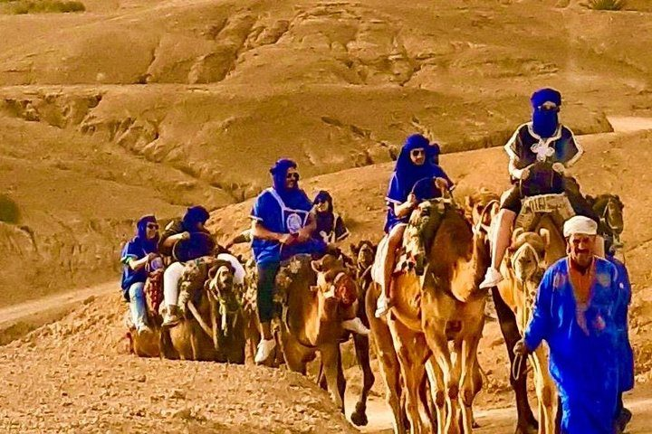
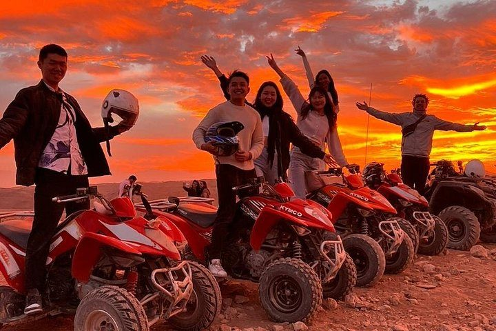
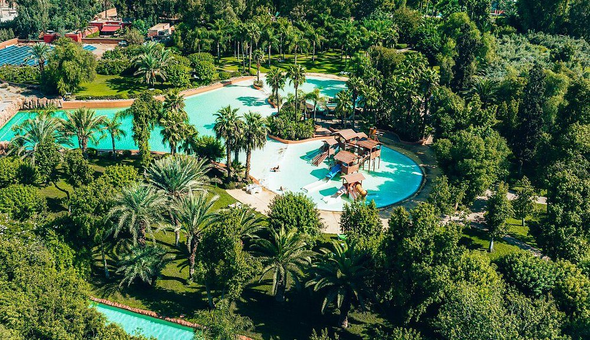
Getting There
Royal Air Maroc
Morocco's national airline flies to Marrakech from across Europe, Africa and the Middle East, with a hub in Casablanca for onward connections.
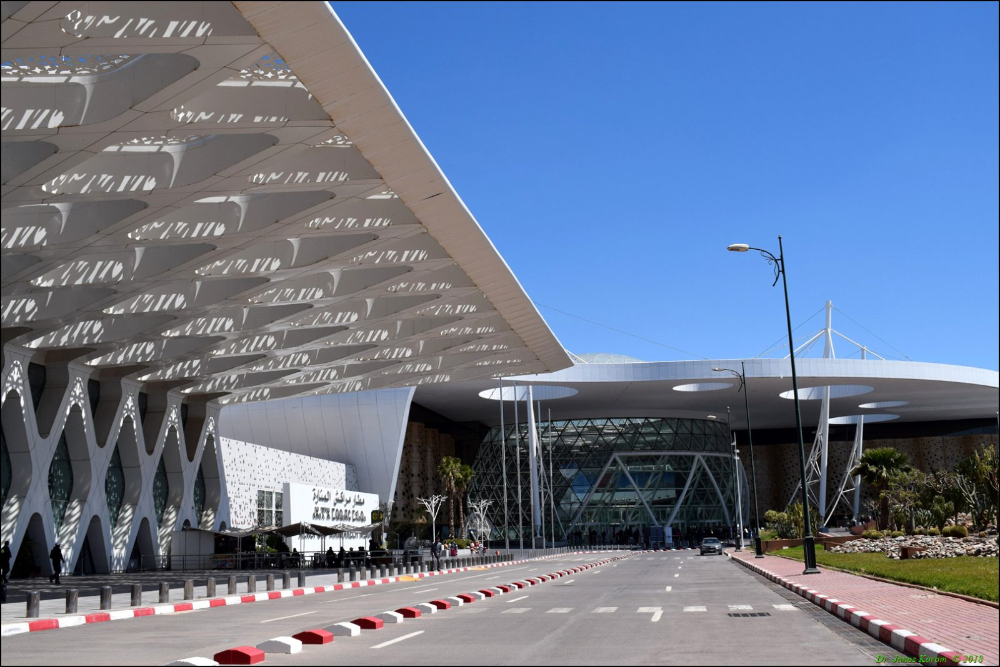
Marrakech Menara Airport (RAK)
Menara is about 5 km from the medina, and its geometric screened roof draws on traditional Moroccan lattice work. Taxis and a public bus run into town — agree the fare before you set off.
A Simple 4-Day Route
Day 1
Palaces & the Square
Bahia Palace, El Badi Palace and the Saadian Tombs in the Kasbah; sunset on a rooftop, then dinner among the stalls of Jemaa el-Fnaa.
Day 2
Madrasa & Souks
Ben Youssef Madrasa and Le Jardin Secret in the morning, then a long wander through the souks — spices, lanterns, leather and rugs.
Day 3
Gardens & Gueliz
Jardin Majorelle at opening time, the Koutoubia and its gardens, then lunch and a stroll in Gueliz before a rooftop dinner.
Day 4
Agafay Desert
Quad biking or a camel trek in the late afternoon, followed by a sunset dinner under lanterns. Travelling with kids? Spend the day at Oasiria instead.
Good to Know
Getting around
The medina is best explored on foot, but the lanes are narrow and busy with scooters, so keep to one side. Use taxis for longer trips, and agree the fare before you set off or ask for the meter.
Entry requirements
Many nationalities, including UK, EU and US passport holders, can visit Morocco visa-free for up to 90 days. Check the latest rules for your passport before you fly.
Dress & customs
Dress modestly in the medina — covering shoulders and knees is a good rule — and ask before photographing people. Haggling in the souks is expected. Hotels add a small nightly tourist tax, usually paid at check-in or check-out.
Start Planning Your Marrakech Trip
Compare flights to Marrakech Menara, and browse hotels across the medina, Gueliz and the Palmeraie in one place.